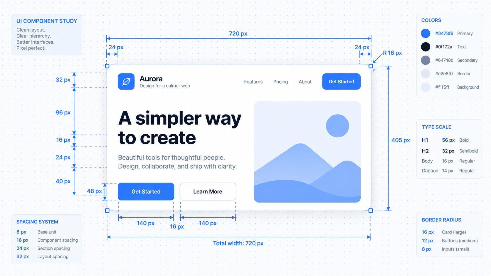
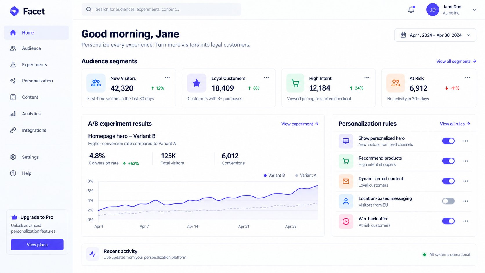
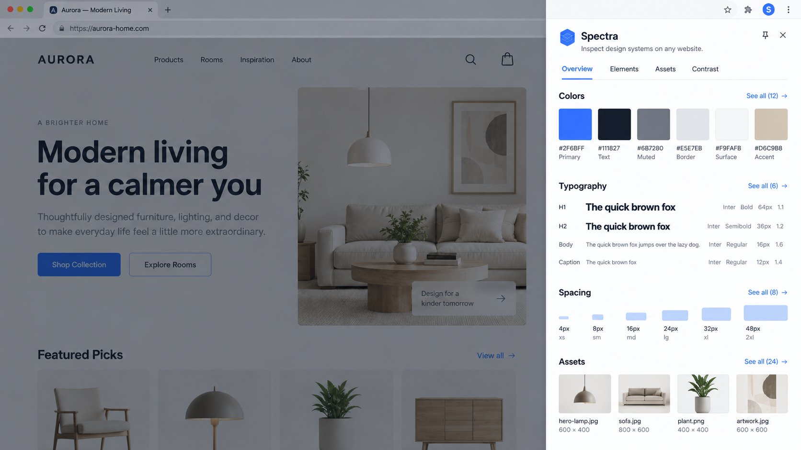
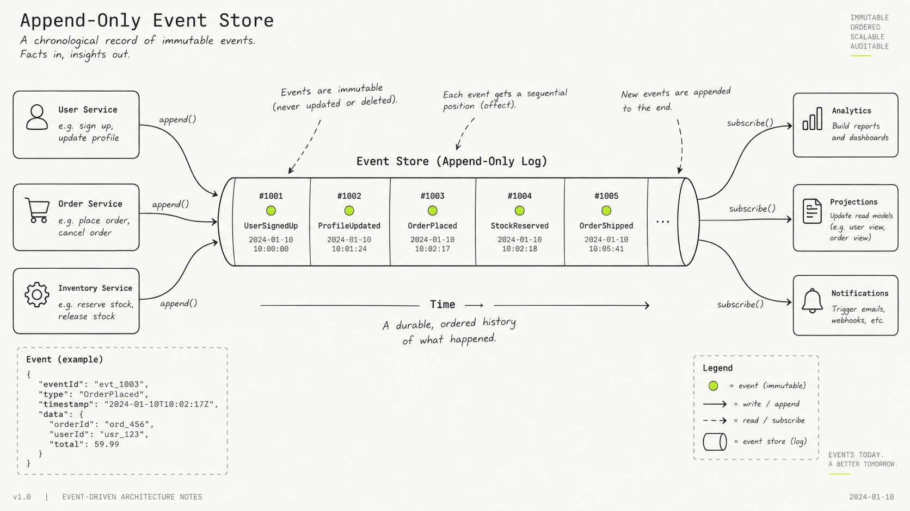
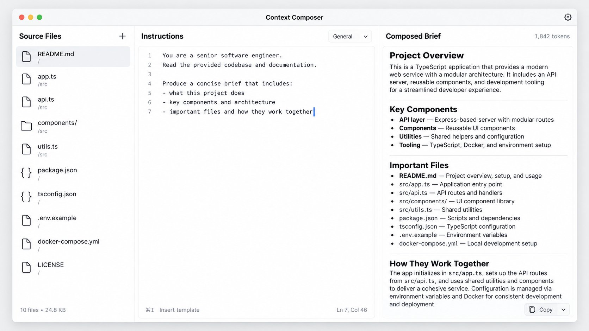
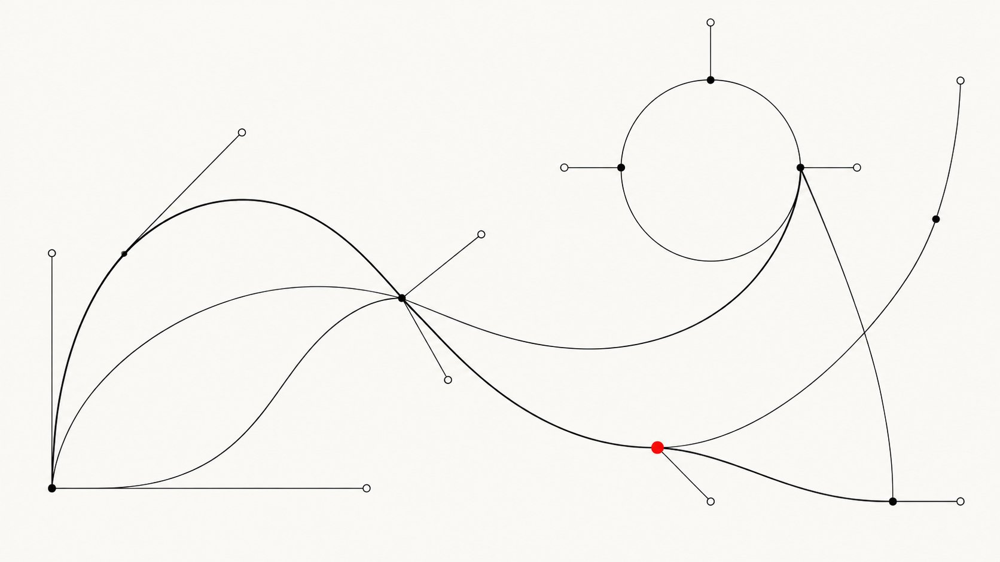
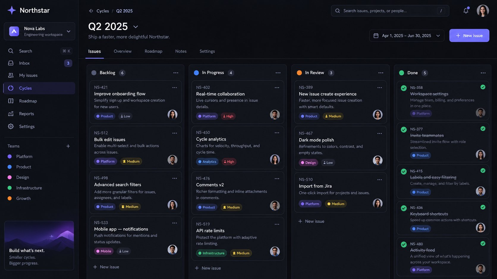
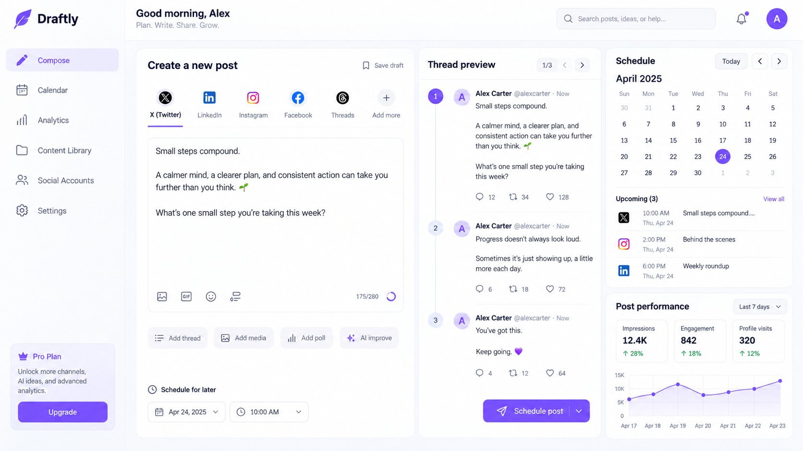
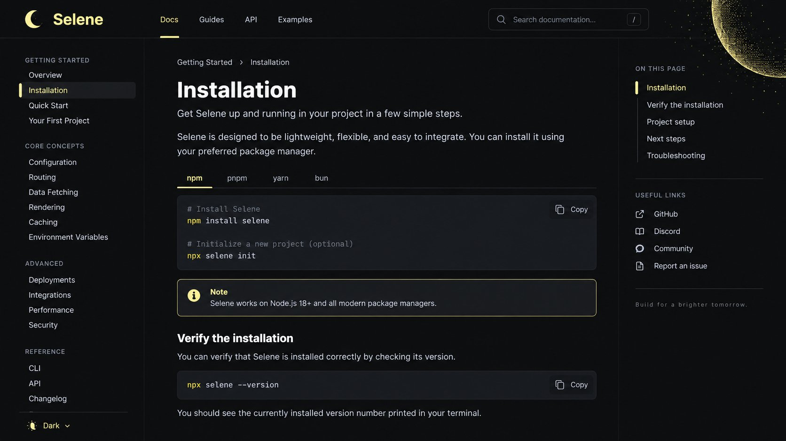
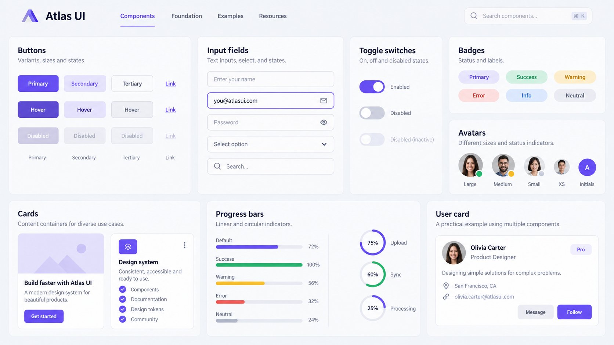

Studies
Each folder under studies/ is a self-contained landing-page study with its own route, reference notes, and a reusable DESIGN-SKILL.md.

Interface Foundations Lab
Annotated-editorial landing study based on the visual system of uidesigncourse.com.
/studies/interface-foundations/
Facet Adaptive Experience
Product-led personalization SaaS study based on the visual system of croct.com.
/studies/adaptive-experience/Weekend Build Lab
Dark event-conversion landing study based on the visual system of outskill.com.
/studies/weekend-build-lab/Inkline Illustration Pack
Monochrome illustration-shop landing study based on the visual system of notioly.com.
/studies/line-illustration-kit/
Spectra Design Extractor
Light tool-SaaS landing study based on the visual system of woblo.in.
/studies/design-extractor/
Flux Web Engine
Dark framed developer-tool study based on the visual system of vite.dev.
/studies/flux-engine/
Open Circuit Journal
Editorial interactive-computing journal study based on the visual system of nan.fyi.
/studies/interactive-systems-journal/
Context Composer
Quiet screenshot-led desktop-tool study based on the visual system of promptbuilder.site.
/studies/context-composer/
Vector Motion Workshop
Editorial interactive-course landing study based on the visual system of svg.guide.
/studies/vector-motion-lab/
Relay Developer Mail
Dark developer-infrastructure landing study based on the visual system of resend.com.
/studies/relay/
Keystroke Command Center
Cinematic keyboard-first productivity study based on the visual system of raycast.com.
/studies/command-center/
Northstar Product OS
Dark product-development system study based on the visual system of linear.app.
/studies/northstar-product-os/
Draftly Publishing Workspace
Product-led social publishing study based on the visual system of typefully.com.
/studies/publish-flow/
Selene Docs Toolkit
Midnight halftone developer-docs landing study based on the visual system of fumadocs.dev.
/studies/selene-docs/
Atlas Component Library
Component-library storefront landing study based on the visual system of untitledui.com/react.
/studies/component-atlas/